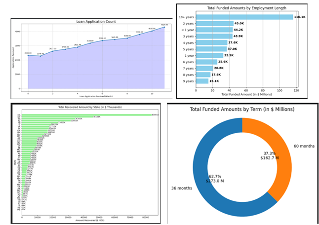
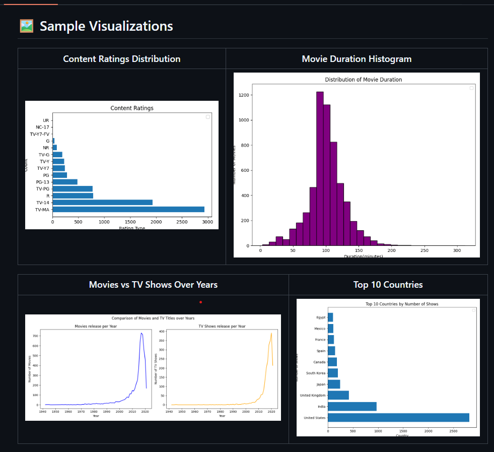
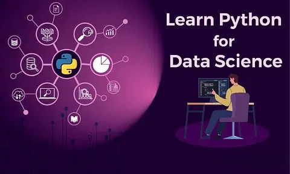
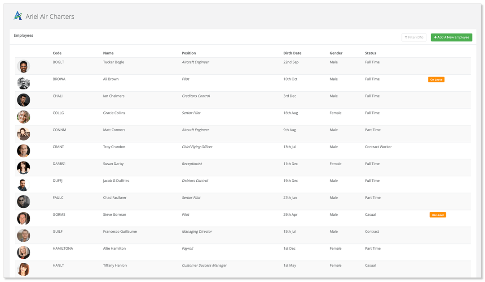

Python has rapidly become the backbone of modern data science, earning its place at the center of analytics, research, and technological innovation. Its elegant, easy-to-read syntax lowers the barrier to entry for newcomers, while its robust capabilities attract professionals from a range of disciplines. Today, Python is not just a programmer’s language—scientists, analysts, and researchers across fields have embraced it as their go-to tool for making sense of complex data.
This widespread adoption is evident across diverse industries. In pharmaceuticals and life sciences, Python accelerates breakthroughs in genomics and drug discovery. In academic and industrial research, it streamlines everything from statistical modeling to large-scale simulations. The IT and tech sectors leverage Python for automation, data engineering, artificial intelligence, and cloud computing. Its versatility has turned it into an essential skill for anyone seeking to unlock insights from data.
Central to Python’s power in data science is its rich ecosystem of libraries. Tools like Pandas and Numpy simplify data cleaning and transformation, while Matplotlib and Seaborn make visualization both intuitive and impactful. Libraries such as scikit-learn drive machine learning innovation, and TensorFlow and PyTorch have become leaders in deep learning research. This wealth of resources allows users to move quickly from raw data to actionable results.
In a world where data is the new currency, Python’s flexibility, strong community support, and adaptability across domains have made it a foundational skill for data science. Whether preparing for industry challenges or advancing research frontiers, mastering Python is more than a technical achievement—it’s a strategic investment in the future of data-driven discovery.

This comprehensive Bank Loan Analysis, developed using Python's data science libraries (Pandas, Matplotlib, and Plotly), provides a detailed examination of a financial loan portfolio. It offers a deep dive into lending activities by tracking key performance indicators (KPIs), assessing portfolio health through good vs. bad loan analysis, and visualizing critical trends. With insights into monthly performance, regional distribution, and borrower characteristics—such as home ownership and employment length—this report delivers actionable intelligence for risk assessment and strategic portfolio management.

Explored Netflix’s global library to uncover trends and insights comparing Movies and TV Shows using Python, pandas, and matplotlib. Answered key questions like: Are there more movies or TV shows on Netflix? What are the most common content ratings? Which countries dominate the catalog?
Key Steps & Features:
- Loaded, cleaned, and preprocessed the Netflix Titles dataset (8,000+ entries)
- Conducted exploratory data analysis and handled data quality issues
- Visualized content ratings, movie durations, and country-wise distributions
- Compared yearly trends of movies vs TV shows with custom charts
- Summarized insights on patterns and regional content dominance
Impact:
Revealed that movies outnumber TV shows, most content is rated for mature audiences, and the US & India dominate Netflix’s catalog. This analysis enables data-driven content and business strategies for streaming platforms.

In this project, I analyzed multi-source customer data from SmartBank (a Lloyds Banking Group subsidiary) to deliver actionable, AI-powered insights for customer retention.
Key Steps:
Integrated demographic, transactional, service, and digital engagement data into a unified analytics dataset
Explored and visualized key churn signals using Python, pandas, matplotlib, and seaborn
Engineered features and addressed data quality issues: missing values, inconsistent formats, outliers
Built and evaluated a Random Forest model to predict customer churn, achieving a ROC-AUC of 0.82
Interpreted feature importances and presented results in a corporate-style, infographic report

Tackled a real-world HR dataset of 15,000 employees, focusing on transforming messy, inconsistent raw data into a clean, analytics-ready format. Using Python, pandas, and numpy, I handled missing values, fixed data types, removed duplicates, addressed outliers, and ensured robust salary data. The result: a reliable, high-quality dataset ready for insightful HR analytics and machine learning.
Key Steps:
- Imported, audited, and profiled raw CSV data
- Fixed inconsistent data types and handled missing values smartly
- Removed duplicates and corrected impossible values (e.g., negative salaries)
- Detected and removed outliers for salary and other numeric fields
- Delivered a clean, well-structured dataset suitable for dashboards, reporting, or AI models
Mastered the fundamentals of NumPy by working with real-world numerical datasets, focusing on efficient data manipulation and computation. Leveraged NumPy arrays to accelerate calculations, perform complex transformations, and enable high-performance analytics—laying a strong foundation for scientific computing and machine learning in Python.
Key Steps:
- Loaded and explored numerical data using NumPy arrays
- Applied array slicing, indexing, and reshaping for flexible data manipulation
- Performed statistical analysis and aggregations directly on arrays
- Implemented mathematical operations and vectorized computations for speed
- Utilized broadcasting and advanced functions for complex data processing tasks

Developed strong proficiency in Matplotlib by visualizing real-world datasets and transforming raw numbers into compelling, insightful graphics. Utilized Matplotlib’s versatile plotting capabilities to create a range of charts and visualizations—enabling clear data storytelling and deeper analytical insights for scientific computing and machine learning projects in Python.
Key Steps:
Designed and customized plots including line graphs, bar charts, scatter plots, and histograms Integrated Matplotlib with NumPy for seamless data-to-visualization workflows Enhanced readability through thoughtful use of labels, legends, titles, and annotations Applied subplots and figure customization for multi-dimensional data exploration Exported publication-quality graphics for reports, presentations, and dashboards

Mastered the art of data storytelling using Seaborn—Python’s most stylish and intuitive statistical visualization library. Explored real-world datasets to craft beautiful, informative graphics and unlock deeper analytical insights. Leveraged Seaborn’s high-level API and powerful aesthetics to make data pop in scientific computing, analytics, and machine learning projects.
Key Steps:
Created rich statistical plots including barplots, violin plots, heatmaps, scatterplots, and pairplots
Customized color palettes (e.g., palette="GnBu", "pastel") for visual impact and clarity
Combined Seaborn with Pandas for seamless data manipulation and visualization workflows
Enhanced visualizations with hue, style, and facet grids for multi-dimensional analysis
Generated publication-ready plots for reports, presentations, and dashboards
Extracted and cleaned textual information from Blackcoffer project web pages using Python web scraping techniques. Automated the process of crawling, parsing HTML, and transforming unstructured content into structured, analytics-ready datasets. This project enabled efficient content analysis, streamlined data preparation for NLP tasks, and provided clean data for deeper business insights.

Overview: Tackled a real-world HR dataset of 15,000 employees, focusing on transforming messy, inconsistent raw data into a clean, analytics-ready format. Using Python, pandas, and numpy, I handled missing values, fixed data types, removed duplicates, addressed outliers, and ensured robust salary data. The result: a reliable, high-quality dataset ready for insightful HR analytics and machine learning.
Key Steps:
- Imported, audited, and profiled raw CSV data
- Fixed inconsistent data types and handled missing values smartly
- Removed duplicates and corrected impossible values (e.g., negative salaries)
- Detected and removed outliers for salary and other numeric fields
- Delivered a clean, well-structured dataset suitable for dashboards, reporting, or AI models
Impact: Enabled the HR team to trust their analytics, automate reporting, and extract actionable workforce insights—while saving countless analyst hours on manual data fixes.